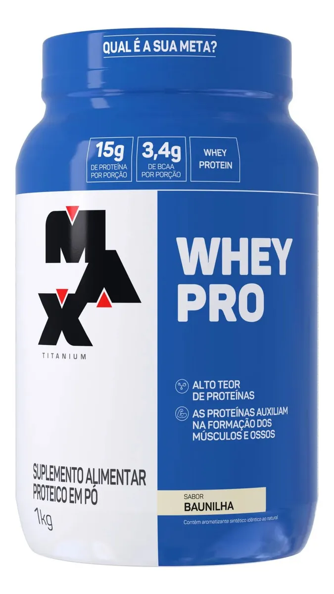

Whey Pro Max Titanium: Vale a Pena? Análise Completa

Se você está buscando um suplemento de alta qualidade para potencializar seus resultados na academia, o Whey Pro da Max Titanium é uma das opções mais populares e respeitadas do mercado. Com 15g de proteína por porção e 3,4g de BCAA, ele oferece o suporte necessário para a recuperação muscular e o ganho de massa magra.
O sabor baunilha é amplamente elogiado pela sua facilidade de diluição e paladar agradável, não sendo excessivamente doce. É ideal para ser consumido com água, leite ou até mesmo em receitas como mingau de aveia, garantindo versatilidade na sua dieta fitness.
APROVEITAR OFERTA NO MERCADO LIVRE
Além da excelente composição nutricional, o Whey Pro se destaca pelo custo-benefício, sendo uma escolha inteligente tanto para iniciantes quanto para atletas experientes. Lembre-se sempre de consultar um profissional de saúde para ajustar a suplementação às suas necessidades individuais.
Siga o AchadoCerto.VIP nas redes sociais para não perder nenhuma promoção!
X (Twitter)